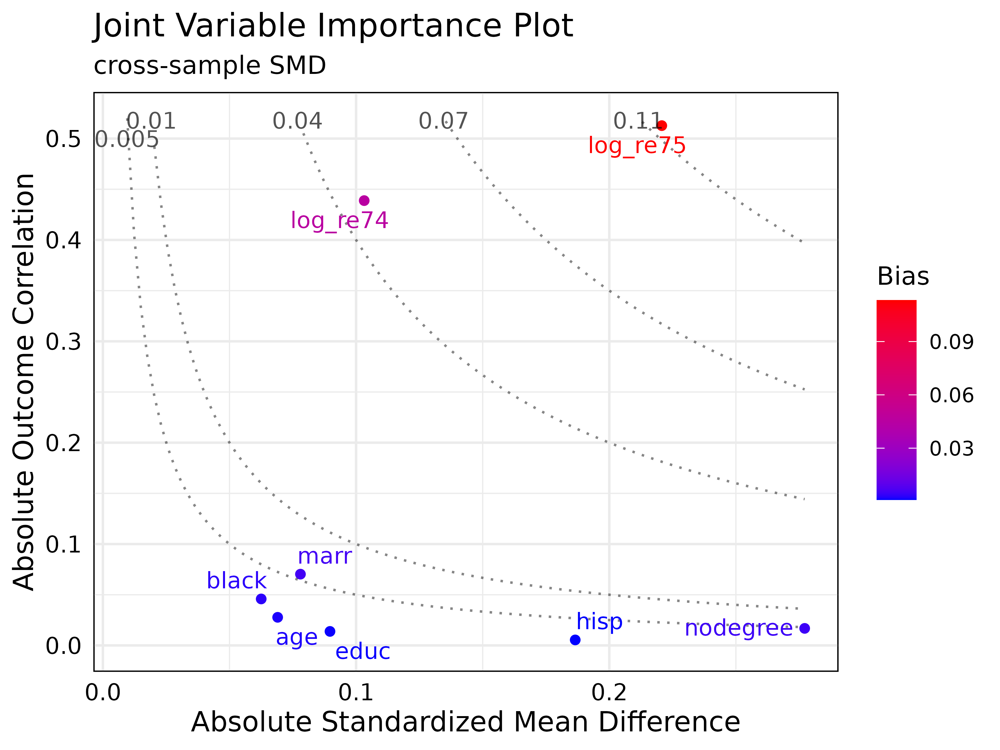
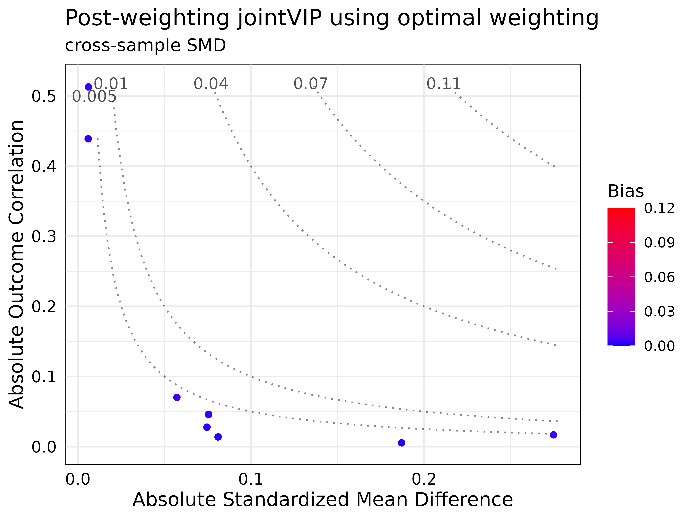

install.packages("jointVIP")The purpose of the jointVIP
The joint variable importance plot (jointVIP for short) is designed to help identify which variables to prioritize based on both treatment and outcome for adjustment. This plot should be used during the design stage of the observational study prior to the analysis phase.
Traditionally, balance tables and Love plots are used to show standardized mean differences and identify variables with high treatment imbalance. However, adjusting only based on treatment imbalance is not advised since they may not be confounders. The jointVIP helps researchers prioritize variables that contribute marginal bias on both dimensions that can be used in observational study design. Additionally, bias curves based on simple one variable (unadjusted) omitted variable bias framework are plotted for the ease of comparison.
Set up for example
You can install the released version of jointVIP with:
# install once its on CRAN!
# install.packages("jointVIP")
# devtools::install_github("ldliao/jointVIP")
# load jointVIP package
library(jointVIP)
# data to use for example
library(causaldata)
# matching method shown in example
library(MatchIt)
library(optmatch)
# weighting method shown in example
library(WeightIt)
library(optweight)Data cleaning
The example data uses data from the causaldata
package, specifically the cps_mixtape and
nsw_mixtape datasets (Huntington-Klein and Barrett 2021). The
experimental version of the nsw_mixtape is commonly known
as lalonde and often an example that shows propensity score
matching, with propensity score estimated from the
cps_mixtape data (Dehejia and Wahba
1999; LaLonde 1986).
Data set contains the following variables:
-
treatdenoting whether the person was selected in the National Supported Work Demonstration job-training program -
ageage in years -
educyears of education -
blackwhether the race of the person was Black -
hispwhether the ethnicity of the person was Hispanic -
marrwhether the person was married -
nodegreewhether the person has degree or not -
re74real earnings in 1974 -
re75real earnings in 1975 -
re78outcome of interest: real earnings in 1978
Here simple data cleaning is performed to log-transform the earnings. To avoid errors, those who earned 0 is transformed as . After transformation, the both data has new variables:
-
log_re74log-real earnings in 1974 -
log_re75log-real earnings in 1975 -
log_re78outcome of interest: log-real earnings in 1978
The jointVIP package uses pilot_df and
analysis_df to denote datasets used. The
analysis_df is the matching/weighting dataset of interest
while pilot_df contains the external controls not used in
the analysis. The pilot_df is used to help inform the
outcome correlation and compare the cross-sample standardized mean
difference. If external data is not available, one may choose to
sacrifice a portion of the analysis controls to form the
pilot_df.
# load data for estimating earnings from 1978
# treatment is the NSW program
pilot_df = cps_mixtape
analysis_df = nsw_mixtape
transform_earn <- function(data, variables){
data = data.frame(data)
log_variables = sapply(variables,
function(s){paste0('log_',s)})
data[,log_variables] =
apply(data[,variables], 2,
function(x){ifelse(x == 0,
log(x + 1),
log(x))})
return(data)
}
pilot_df <- cps_mixtape
pilot_df <- transform_earn(pilot_df, c('re74', 're75', 're78'))
analysis_df <- nsw_mixtape
analysis_df <- transform_earn(analysis_df, c('re74', 're75', 're78'))Specifying parameters for the create_jointVIP()
function
To visualize for the jointVIP, following parameters must be specified:
-
treatmentthe treatment variable name; 0 for control and 1 for treated -
outcomethe outcome of interest -
covariatescovariates of interest that are common for the twopilot_dfandanalysis_df— the variables all should occur prior to treatment and be potential confounders -
pilot_dfpilot dataset consists of external controls -
analysis_dfanalysis dataset consists of both treated and controls of interest
The new_jointVIP is a jointVIP object.
treatment = 'treat'
outcome = 'log_re78'
covariates = c(names(analysis_df)[!names(analysis_df) %in% c(treatment,
outcome, "data_id",
"re74", "re75",
"re78")])
new_jointVIP = create_jointVIP(treatment = treatment,
outcome = outcome,
covariates = covariates,
pilot_df = pilot_df,
analysis_df = analysis_df)Diagnostics with a jointVIP object
The summary() function outputs the maximum absolute
bias, the number of variables are above the desired bias tolerance
(measured in absolute always), and the number of variables that can be
plotted.
summary(new_jointVIP,
smd = "cross-sample",
use_abs = TRUE,
bias_tol = 0.01)
#> Max absolute bias is 0.113
#> 2 variables are above the desired 0.01 absolute bias tolerance
#> 8 variables can be plottedThe print() function outputs the variables and its
associated bias above the absolute bias_tol desired.
print(new_jointVIP,
smd = "cross-sample",
use_abs = TRUE,
bias_tol = 0.01)
#> bias
#> log_re75 0.113
#> log_re74 0.045
plot(new_jointVIP)
By visualizing with the jointVIP, several important
aspects stand out. First, the most important variables are the
log_re75 and log_re74. Traditional methods,
such as the Love plot or balance table would indicate
nodegree and hisp variables to be more
important to adjust than log_re74, but these variables show
low marginal bias contribution using the jointVIP.
Matching examples
Following matching examples are performed to illustrate the utility
of the jointVIP. Based on the plot shown above, the only variables that
need adjustment are the log_re75 and log_re74.
Post-match results are plotted to help visualize for comparison.
Optimal pair matching
As a simple example, optimal pair matching using Mahalanobis distance
is used (Ho et al. 2011; Hansen 2007).
Based on the desired bias tolerance, only log_re75 and
log_re74 are inputted into the formula.
# 1:1 optimal matching w/o replacement
m.out <- matchit(
treat ~ log_re75 + log_re74,
data = analysis_df,
method = "optimal",
distance = "mahalanobis"
)
optmatch_df <- match.data(m.out)[, c(treatment, outcome, covariates)]Optimal weighting
Optimal weighting example is performed below, basing the weights upon
log_re75 and log_re74 (Greifer 2021). Please see documentation on
Zubizarreta (2015) for details.
# ordering for the weightit
ordered_analysis_df = analysis_df[order(analysis_df$treat, decreasing = T),]
optwt <- weightit(treat ~ log_re74 + log_re75,
data = ordered_analysis_df,
method = "optweight", estimand = "ATE",
tols = 0.005, include.obj = TRUE)
# summary(optwt)
optwt_df = ordered_analysis_df[, c(covariates, treatment, outcome)]Post-matching/weighting assessment with post_jointVIP
object
Below are the examples showing how to plot after matching. The main
function to use is the create_post_jointVIP() function,
which takes in the original jointVIP object new_jointVIP in
our example. The post-matched data frame need to be specified as
post_analysis_df argument.
The functions: summary(), print(), and
plot() all provide comparison between original and post
jointVIPs. Note that the post-matched data frames contain the
pair-matched individuals — for post-weighted data, an additional
processing step multiplying the weight by the original data.frame
subsetted on all the covariates.
All methods yielded satisfactory results based on desired bias tolerance.
post_optmatch_jointVIP <- create_post_jointVIP(new_jointVIP,
post_analysis_df = optmatch_df)
summary(post_optmatch_jointVIP)
#> Max absolute bias is 0.113
#> 2 variables are above the desired 0.01 absolute bias tolerance
#> 8 variables can be plotted
#>
#> Max absolute post-bias is 0.005
#> Post-measure has 0 variable(s) above the desired 0.005 absolute bias tolerance
print(post_optmatch_jointVIP)
#> bias post_bias
#> log_re75 0.113 0.005
#> log_re74 0.045 0.003
plot(post_optmatch_jointVIP,
plot_title = "Post-match jointVIP using optimal matching")
post_optwt_jointVIP = create_post_jointVIP(new_jointVIP,
post_analysis_df = optwt_df,
wts = optwt$weights)
summary(post_optwt_jointVIP)
#> Max absolute bias is 0.113
#> 2 variables are above the desired 0.01 absolute bias tolerance
#> 8 variables can be plotted
#>
#> Max absolute post-bias is 0.005
#> Post-measure has 0 variable(s) above the desired 0.005 absolute bias tolerance
print(post_optwt_jointVIP)
#> bias post_bias
#> log_re75 0.113 0.003
#> log_re74 0.045 0.003
plot(post_optwt_jointVIP,
plot_title = "Post-weighting jointVIP using optimal weighting")